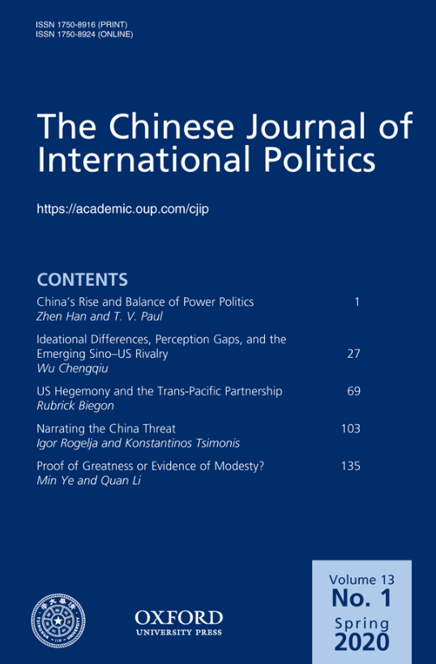

收录于合集 #新刊速递 123个

期刊简介

《中国国际政治杂志》（ The Chinese Journal of International Politics ）成立于2006年，主编是孙学峰，是由牛津大学出版社每季度出版的经同行评议的学术期刊，以现代方法论为基础研究国际关系，也发表历史研究和政策导向的论文。该期刊大部分文章或与中国有关，或对中国的外交政策有影响。
本期编委
【编译】 李思 石雨宸 朱曈菲 姚寰宇 冯毓婧
【审校】 王国欣 李博轩 戴赟
【排版】 梁鑫昱

本期目录
1.中国的崛起与均势政治
China’s Rise and Balance of Power Politics
2. 观念差异，认知隔阂以及正在形成的中美竞争
Ideational Differences, Perception Gaps, and the Emerging Sino-US Rivalry
3. 美国霸权与跨太平洋伙伴关系：共识，危机与常识
US Hegemony and the Trans-Pacific Partnership: Consensus, Crisis, and Common Sense
4. 叙述中国威胁：中国经济在欧洲经济存在的安全化
Narrating the China Threat: Securitising Chinese Economic Presence in Europe
5. 大国还是中等强国？中国参与联合国维和行动的比较分析
Proof of Greatness or Evidence of Modesty? A Comparative Analysis of China’s Participation in UN Peacekeeping Operations
01
中国的崛起与均势政治
【题目】
China’s Rise and Balance of Power Politics
【作者】
Zhen Han：塔夫茨大学弗莱彻法律与外交学院博士后
T V Paul：麦吉尔大学国际关系专业教授
【摘要】
以美国为主导的冷战后国际体系已被美国经济的相对低迷和中国的同时崛起所动摇。中国正迅速成为美国在印太地区主导地位的有力竞争者。值得注意的是，与冷战时期的国家行为不同，该地区各国之间缺乏以正式军事同盟形式出现的强均势政治。随着各国对彼此战略回应的不断演变，各国仍在实施对冲策略。我们认为，导致强均势政治缺乏的关键因素在于，迄今为止，无论是中国还是其潜在对手都没有感知到生存威胁。两个相关的关键因素在很大程度上排除了生存威胁，因此在地区内很难形成由中国发起或与中国对抗的均势军事同盟。第一个关键因素是在全球化时代，中国与潜在的对手建立了更深层次的经济相互依赖关系，尤其是美国、日本和印度。第二个关键因素是中国的大战略，特别是和平崛起或和平发展，以及以基础设施建设为导向的“一带一路”倡议。这两种关键因素任何根本性的变化都可能导致关键国家面临生存威胁，从而导致形成强均势同盟。
The post-Cold War international system, dominated by the United States, has been shaken by the relative downturn of the US economy and the simultaneous rise of China. China is rapidly emerging as a serious contender for America’s dominance of the Indo-Pacific. What is noticeable is the absence of intense balance of power politics in the form of formal military alliances among the states in the region, unlike state behaviour during the Cold War era. Countries are still hedging as their strategic responses towards each other evolve. We argue that the key factor explaining the absence of intense hard balancing is the dearth of existential threat that either China or its potential adversaries feel up till now. The presence of two related critical factors largely precludes existential threats, and thus hard balancing military coalitions formed by or against China. The first is the deepened economic interdependence China has built with the potential balancers, in particular, the United States, Japan, and India, in the globalisation era. The second is the grand strategy of China, in particular, the peaceful rise/development, and infrastructure-oriented Belt and Road Initiative. Any radical changes in these two conditions leading to existential threats by the key states could propel the emergence of hard-balancing coalitions.
【编译】 李思
【审校】 李博轩
02
观念差异，认知隔阂以及正在形成的中美竞争
【题目】 Ideational Differences, Perception Gaps, and the Emerging Sino-US Rivalry
【作者】
吴澄秋，复旦大学国际关系与公共事务学院副教授，主要从事亚太地区国际关系、政治经济学、中国政治与外交等领域的研究，同时担任英文学术期刊Chinese Political Science Review（《中国政治学评论》）的编辑。
【摘要】
中美双边关系在过去的二十年里已经悄然变化，从上世纪90年代，尽管利益和认知不同，但全球主义和多边主义尚能拉近双方距离的“同床异梦”时期；到可能出现的两国经济进一步疏离，两国政府陷入霸权竞争的“不同的床，相同的噩梦”局面。本文从温特建构主义和认知心理学的角度，提出了一个系统的、动态的理论框架，并回顾了中美关系的演变，解释了上述变化的发生及其原因。本文将20世纪90年代初以来的中美关系细分为五个时期，从四个方面论述了美国的对华战略，从三个方面阐述了中国的对美战略。本文认为，美国的对华战略发生了巨大变化，而中国的对美战略保持相对稳定。中美关系从上世纪90年代初到2010年中期的特点是战略兼容下的合作,而随后的战略不相容引发了竞争。本文认为，中美两国之间的竞争源于两国本质上的理念差异，即中国的国家民族主义和美国的自由主义霸权，这种认知上的差异加剧了双方的隔阂。简而言之，中美之间“不同的梦想”导致了“相同的噩梦”。
Bilateral relations between China and the United States have evolved over the past two decades from the ‘same bed, different dreams’ of the 1990s when, despite different interests and perceptions, globalisation and multilateralism drew them closer, to the potential ‘different beds, same nightmare’ scenario where their economies draw further apart and their governments are locked in hegemonic rivalry. Drawing on Wendtian constructivism and cognitive psychology, this article proposes a systematic and dynamic theoretical framework and a review of the evolution of Sino–US relations to explain how and why the above changes happened. We subdivide Sino–US relations since the early 1990s into five periods that describe the United States’ China strategy in four aspects and China’s US strategy in three aspects. Our findings are that the United States’ China strategy has changed dramatically while China’s US strategy has remained relatively stable, and that Sino–US relations from the early 1990s to mid-2010 were characterised by cooperation borne of strategic compatibility, whereas those ensuing were characterised by competition due to strategic incompatibility. We argue that rivalry between the two countries stems from their fundamentally different ideas, namely, Chinese statist nationalism and American liberal hegemony, and that gaps in perception have exacerbated the differences. Simply put, their ‘different dreams’ have led to the ‘same nightmare’.
【编译】 石雨宸
【审校】 李博轩
03
美国霸权与跨太平洋伙伴关系：共识，危机与常识
【题目】
US Hegemony and the Trans-Pacific Partnership: Consensus, Crisis, and Common Sense
【作者】
Rubrick Biegon，肯特大学国际关系讲师
【摘要】
本文对美国在跨太平洋伙伴关系(TPP)中的作用进行了批判性分析。在新葛兰西主义理论的基础上，本文将美国退出TPP的决定视为霸权危机的表现。通过对美国对外经济政策中贸易协定的目标、战略与地缘经济逻辑的考察，本文认为TPP的主要目的是扩大美国在国际政治经济中的结构性和共识性权力。TPP在一定程度上既是为了启动停滞不前的新自由主义议程，也是为了回应中国在贸易治理方面日益增长的影响力。文章认为，尽管TPP以《全面与进步跨太平洋伙伴关系协定》(Comprehensive and Progressive Agreement for Trans-Pacific Partnership，简称CPTPP)的形式复苏，但美国精英们无法执行最初协议的表现表明了霸权危机的存在。这种危机主要是由支持经济全球化的“共识”的崩溃所造成的。
This article provides a critical analysis of the agency of the United States in the Trans-Pacific Partnership (TPP). Building on neo-Gramscian theory, it contextualises the US decision to withdraw from the TPP as an expression of hegemonic crisis. Through an examination of the strategic and geoeconomic logics and objectives of the trade agreement in US foreign economic policy, it maintains that the TPP was intended primarily to expand the structural and consensual power of the United States in the international political economy. Partly an attempt to kick-start a stalled neoliberal agenda, the TPP was also an effort to respond to China’s growing influence in trade governance. The article argues that, despite the revival of the TPP in the form of the Comprehensive and Progressive Agreement for Trans-Pacific Partnership, the inability of elite networks in the United States to implement the original accord is illustrative of a crisis of hegemony driven largely by the collapse of the ‘common sense’ in favour of economic globalisation.
【编译】 朱曈菲
【审校】 王国欣
04
叙述中国威胁：中国经济在欧洲经济存在的安全化
【题目】
Narrating the China Threat: Securitising Chinese Economic Presence in Europe
【作者】
Igor Rogelja欧洲大学研究院马克斯·韦伯学者，伦敦国王学院中国研究院教师。Konstantinos Tsimonis伦敦国王学院中国研究院讲师。
【摘要】
本文揭示了欧洲智库对“中国威胁”的话语建构。从理论而言，智库在安全化的过程中扮演着关键角色，尤其是在各种想法与参考成形的初始阶段。尽管智库并无决策权，但是它却在想法的形成与要求过程中扮演了安全化参与者的角色，为政策制定者阐明安全化的参照系。就欧中关系而言，作者观察到智库和政策制定者之间正在形成一种新的契合，他们致力于非线性地构建“中国威胁”政策框架。本文回顾了通过欧盟官方政策渠道传播的主要智库报告，并解构了“中国威胁”言论背后的假设。从分析上讲，作者首先认为，他们进行安全化尝试的特点歪曲了对中国海外经济活动的描述，包括那些属于“一带一路”倡议的经济活动。其次，在政治上，这种说法产生了一种扭曲的欧洲政治概念，即在欧洲政治中，“多元化就是软弱，不同意见就是异见”，从而助长了欧盟的一种观点，即“负责任的”核心国家必须遏制外围国家的“机会主义”。其三，作者认为，尽管辩称“欧洲性”是人权和民主的缩影，但中国对外直接投资的安全化依赖于其他有可能破坏这些理想的实践。通过识别安全化努力中存在的问题，作者呼吁就中国投资和融资对欧洲经济和社会的挑战展开基于事实的多元化辩论。
This article unpacks the discursive construction of a European ‘China Threat’ narrative by European think tanks. We theorise think tanks as crucial actors in the securitising process, especially at the initial stages where ideas and reference frames are formed. Despite having no decision-making authority, think tanks participate as securitising actors in the process of idea formation and bidding, articulating a securitised frame of reference for policy makers. In the case of EU–China relations, we observe an emerging congruence between think tanks and policy makers that engage in a non-linear construction of a ‘China Threat’ policy frame. In this article, we review key think tank reports that are circulated through official EU policy channels and deconstruct the assumptions behind the ‘China Threat’ discourse. We first argue that, analytically, their securitising attempt is characterised by a distorted representation of Chinese economic activities abroad, including those falling under the Belt and Road Initiative. Second, politically, this narrative produces a distorted notion of European politics where pluralism is weakness and disagreement dissent, promoting a view of the EU where ‘responsible’ core countries must contain the periphery’s ‘opportunism’. Third, we contend that despite defending ‘Europeanness’ as the epitome of human rights and democracy, the securitisation of Chinese FDI rests on othering practices that risk undermining those very ideals. By identifying the problematic undertones of this securitising effort, we call for a fact-based and pluralistic debate on the challenges of Chinese investment and financing for European economies and societies.
【编译】 姚寰宇
【审校】 戴赟
05
大国还是中等强国？中国参与联合国维和行动的比较分析
【题目】
Proof of Greatness or Evidence of Modesty? A Comparative Analysis of China’s Participation in UN Peacekeeping Operations
【作者】
Min Ye（叶珉），卡罗莱纳海岸大学政治系教授；Quan Li（李泉），武汉大学政治与公共管理学院行政管理系教授。
【摘要】
任何有关中国崛起后果的严肃讨论，都必须首先对中国在国际体系中的实际影响和地位进行系统而严格的评估。文章考察了一个在关于中国国际地位的争论中被广泛使用的指标。尽管许多现有研究认为，中国积极参与联合国维和行动是其大国地位无可争辩的证据，但也有人认为，这显示中国只是一个中等强国（middle power）。本文认为，对于中国的政策行为应该以一种比较的方式，以及动态的角度来评估。通过比较中国与世界上其他20个主要国家的维和行动人事部署（personnel contribution）的模式与特点，本文发现中国的行为更类似于土耳其、印度和巴西这样的发展中“中等强国”，而不是像联合国安理会其他常任理事国或传统的“西方中等强国”那样的“大国”。
Any serious discussion about the consequences of China’s rise must start with a systematic and rigorous assessment of China’s actual influence and status in the international system. In this article, we examine a widely used indicator in the debate about China’s international status. Although many existing studies see China’s active participation in United Nations (UN) Peacekeeping Operations as incontestable evidence of China’s great power status, others contend that it signifies the status of only a middle power. We posit that China’s policy behaviour should be evaluated in a comparative manner, and from a dynamic perspective. After comparing the patterns and features of China’s personnel contributions with that of 20 other major countries in the world, we find that China’s behaviour is more similar to that of developing ‘middle powers’, such as Turkey, India, and Brazil, as opposed to established ‘great powers’ such as other permanent members of the UN Security Council or traditional ‘western middle powers’.
【编译】 冯毓婧
【审校】 戴赟

添加 “国小政”微信助手，获取最新资讯


好好学习，天天“在看”
国政学人
支持学术公益与知识传播
微信扫一扫赞赏作者 __赞赏
已喜欢，对作者说句悄悄话
取消 __
发送给作者
发送
最多40字，当前共字
上一页 1/3 下一页
长按二维码向我转账
支持学术公益与知识传播
受苹果公司新规定影响，微信 iOS 版的赞赏功能被关闭，可通过二维码转账支持公众号。